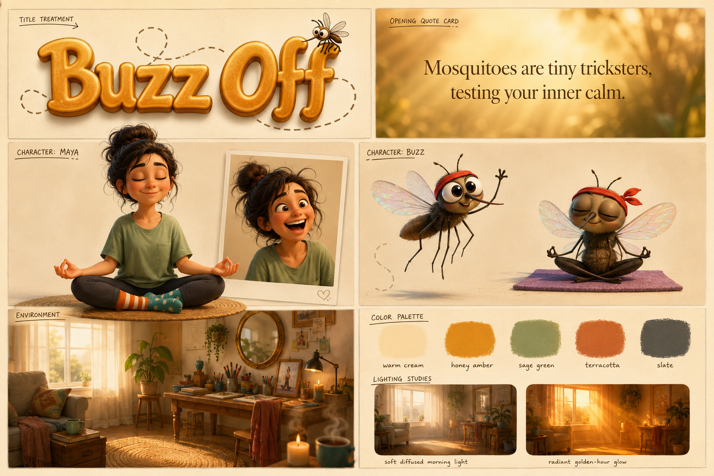
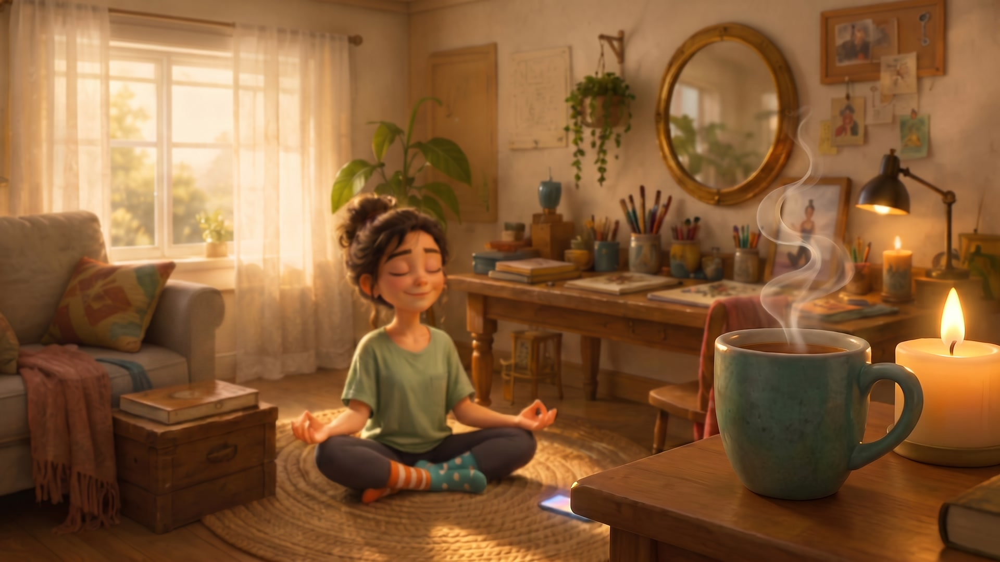
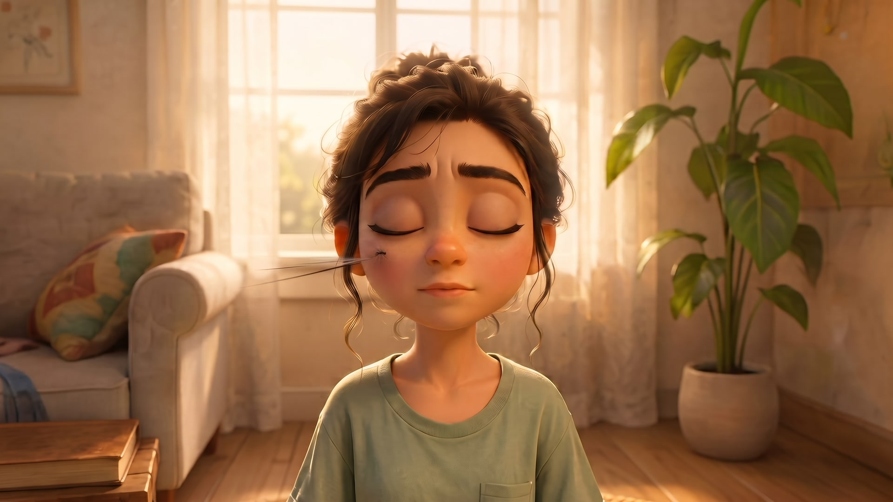
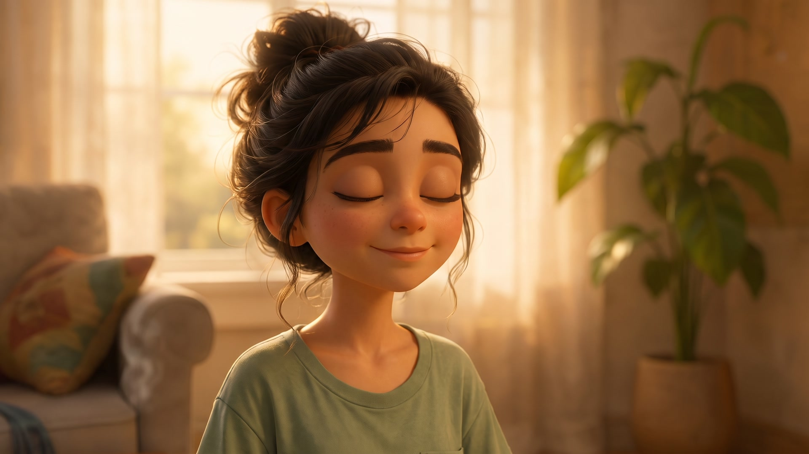
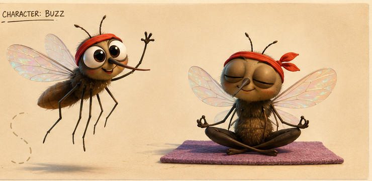
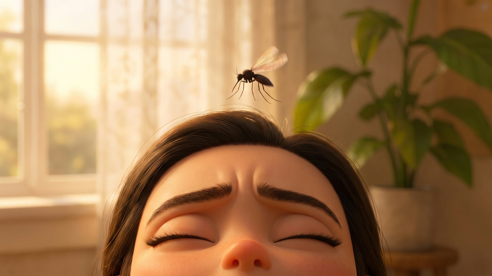
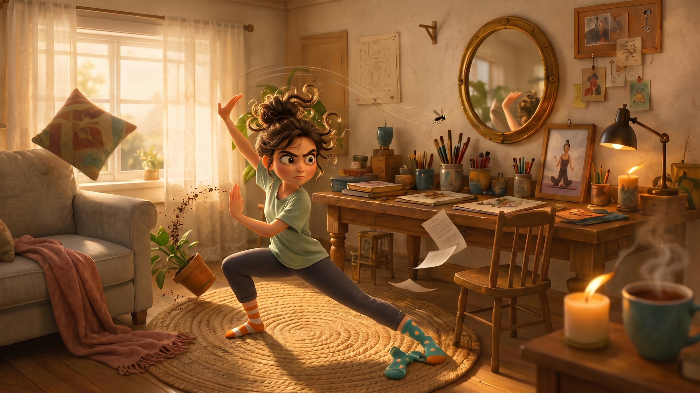

A meditating woman, one very persistent mosquito, and a full studio pipeline — production bible, keyframe continuity system, and the first animated shots. This one's still in the oven; here's the making-of, as it's being made.
Everything starts from a single generated board: title treatment, both characters, the set, the palette, and the opening quote — then the characters and room get cropped out and re-used as reference images for every single keyframe. Words drift; pictures don't.

The whole film on one canvas. Maya's turnaround, Buzz's two poses, the environment and five paint swatches — generated in one shot, then cropped into reference sheets.
Adapted from Episode 03's keyframe-pair workflow, rebuilt for character animation: the video model never invents a composition — it only animates between frames that were approved as cheap images first.
A production bible defines all 20 shots, the voiceover script, a lens map (85mm for feeling, 24mm for comedy), and the story spine before anything is generated.
Every keyframe request carries the character crops and the approved master wide as image references — up to 8 per generation on Nano Banana Pro.
Keyframes cost ~25 credits; clips cost ~110–180. Nothing goes to video until its still frame passes review. Retakes happen at image price.
A duplicate mug? A too-big mosquito? A 12-credit image-to-image edit fixes the flaw and keeps every other approved pixel intact.
AI models happily redecorate between shots. The fix is a three-layer continuity system — and it's the heart of this whole production.
The canonical set. Shot 02 doubles as the establishing shot of the film and the ground truth every other camera angle must obey.
The zero-cost shot. The film's opening frame isn't generated at all — it's the master wide put through an ffmpeg gaussian blur, so the cut into shot 02 plays as a focus-reveal. Free, and pixel-perfect continuity.
Every case study here shows the misses. This episode had three recurring ones — each now a standing rule in the production bible.

Two shot types kept sliding into photography: frames with no character face, and extreme macros on a face — pores and all.

Every model wanted the mosquito to be a co-star: dragonfly-sized, in focus, grinning. It took three rounds of notes to shrink him.

Over-the-shoulder angles kept "turning" Maya toward whatever wall the model put behind her — because the wall she faces is never seen on camera.
In the script, the mosquito's adorable design — the headband, the huge eyes — is only revealed when he lands in Maya's palm and unrolls a tiny yoga mat. So the prompts enforce it: before shot 16 he may only exist as a dark motion-blurred silhouette.

The design the audience hasn't earned yet. Buzz's reference sheet — reserved for the third act.

What the film shows instead. Shot 07: a speck-scale silhouette descending like a lunar lander.
Both animated with Kling 3.0 from a single approved keyframe each — one slow-burn macro, one full slapstick. The film's story clips will use locked-off cameras; these two deliberately break that rule for the showreel.

The keyframe behind the hero clip. Shot 12: tai chi meets cartoon frenzy, every prop still exactly where the master wide says it lives — and the mosquito a speck by the mirror.
All 20 shots, the voiceover script, the lens map, the continuity rules and the reveal discipline — the full working document this film is being made from.